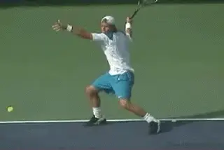

Contact Moves: The Transfer¶
David Bailey
In my first article, I introduced a new concept for understanding court movement, the Contact Move. This analysis is based on my study of the top players in the world over the last 10 years, including the film resources developed by John Yandell for Tennisplayer and Advanced Tennis.
The Contact Move synthesizes all the components of movement into a single concept. These components include out steps to the ball, hitting stances, movement during the hit--what I call the balance moves--and also, recovery steps.
Contact Moves can be divided into 3 general categories. Offensive, Neutral, and Defensive. In the first article we looked at the first Offensive Contact Move, what we called the Step Down. (link.)
Now let's introduce a second aggressive contact move, what I call the Transfer Move. The Transfer Move is a contact move in which the weight is transferred from the back foot to the front foot during the swing.
Top players use the Transfer Move when they hit aggressive open stance forehands and to a lesser extent on the backhand as well. This sequence is what Dave Porter refers to as \"Load, Explode, and Land\" in his current article on Components of the Forehand. (link.)
On the return, top players routinely use Transfer footwork on both the forehand and backhand sides. This is true for both one-handed and two-handed backhand returns.

Forward Transfer: back leg kicks straight, front foot points in direction shot.
Forehand Transfers
On the forehand, the Transfer Move is associated with the higher contact points we commonly see in pro tennis. Typically, this contact point will be around chest level, or sometimes higher.
There are two versions of the forehand Transfer. These are the Forward Transfer and the Lateral Transfer. The difference is the direction of the transfer of the weight during the swing.
The Forward Transfer is typically used on a medium pace ball or a floating ball hit around the center of baseline. It can be hit either crosscourt or down the line. Players also typically use the Forward Transfer when they hit inside out.
From a loaded semi-open stance, the player elevates off the court before contact with the hips squaring to the net. The weight is propelled forward, moving through the shot.
As the racket moves forward, the back leg \"curls\" and kicks back behind the player. The player lands on the left front foot, with the back leg pointing behind.

The Lateral Transfer with the front foot pointing more to the left and the kick back more to the side.
Typically, the front foot is pointing forward in the direction of the shot. The player then brings the rear leg around for balance and to start the recovery.
Lateral Transfer
The difference with the Lateral Transfer is the direction of the movement of the weight during the shot. With the Lateral Transfer, the weight shift is less forward and more to the side or to the player's left. Typically, players use the Lateral Transfer when they are going Inside In.
Again, the players use a semi-open stance with the outside leg loaded. The player swings and explodes off the court and into the air, with the body rotation taking the left foot more across the body.
With the Forward Transfer, the front foot lands ahead of the rear and points straight ahead. With the Lateral Transfer, it lands even with the rear foot or only slightly ahead, pointing more to the sideline than forward.

The sequence is the same on the backhand: loading, front foot landing and rear leg kicking back.
The leg curl or kick back is also now more to the side. Again, the rear leg comes around to re-establish balance and begin the recovery steps.
Backhand Transfers
Although you commonly see Transfer footwork on the forehand, it is used much less frequently on the backhand groundstrokes. There are some exceptions, for example Venus Williams or Elena Dementieva, who hit more open stance backhands than most players.
Although the contact point is usually lower on the backhand, the sequence is the same: open stance loading, a front foot landing, and a kick back with the rear leg.
I believe that Transfer footwork is something you will see more and more in the future on the backhand side. In my opinion, this is one way in which the game can evolve toward even more aggressive play.
Return Transfers

Return Transfers: open stance loading and closed stance landing.
At the pro level, Transfer footwork is common on the return of serve on both the forehand and backhand sides. Typically, players use the Transfer on first serve returns when they are moving forward, hitting the ball on the rise, and using the power of the serve to hit aggressive returns. You can see this in the games of the great returners, like Andre Agassi and Roger Federer.
As the players prepare, they load the weight on the outside leg. The difference compared to the groundstroke is that they typically user a wider or fully open stance. As the swing begins, they elevate off the court and shift the weight forward during the swing. The landing is again on the front foot. The back leg curls and kicks back away from the player, as with the other transfers.
Besides the wider open stance in the loading phrase, there are two other differences compared to the groundstrokes. The first is that the contact point is lower because the players are usually taking the ball early.
The second difference is the stance after the landing. When players use the Transfer Move on returns, they step forward and across with the front foot, landing in a closed stance. This is in contrast to forehand groundstroke transfers, where the players remain in an open stance during the landing.

David Bailey is a native Australian who has spent 15 years studying tennis at the professional level. He has developed a new language for one of the most complex and misunderstood aspects of the game, footwork and court movement. David has worked with world class players and coaches, national tennis associations and top academies, and has presented at coaching seminars around the world. His teaching system, the Bailey Method, has become a regular part of the coaching curriculum at the Nick Bollettierri Tennis Academy, where it is personally endorsed by Nick
Visit David's Website! [!]
To Contact David directly [!]